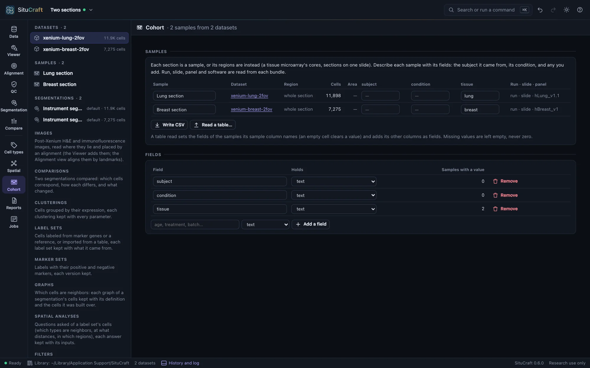
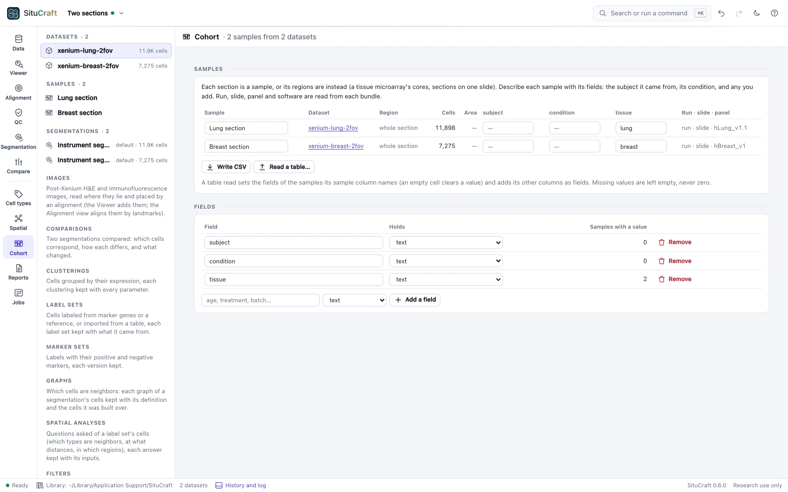

Samples
A study's sections in one project, each a sample: described by the subject it came from, its condition and any field you add, beside its run, slide and panel read from its bundle. A section's regions can be its samples instead, such as a tissue microarray's cores.
Several sections in a project
A project holds as many sections as a study has, each a dataset recorded from its own bundle. Open them together: choose several bundles at once, or a folder that holds them, and SituCraft lists every bundle in it. Add all to the project, in the Data view or the Cohort view, checks each one and adds those without a fatal problem. The views work on one dataset at a time: the one in focus in the project tree.
Each dataset is a sample of the project until its regions are made samples instead (see Regions as samples). The project tree lists the samples once there are two or more, each with its condition and subject.
Describing the samples
The Cohort view's Samples table has a row for each sample: its name, its dataset, its region, its cells under its dataset's default segmentation, and its fields.
- Your fields: subject and condition to begin with, and any you add under Fields (age, treatment, batch). A field holds text or a number. A number field takes only numbers, and a field becomes one only when every value it holds is a number. A value left empty is missing, never zero.
- The bundle's fields: the run, the slide and the panel, read from each bundle's
experiment.xenium(with the Xenium region and the software, shown when you point at them). They show which samples share a run, a slide or a panel, and are not edited.
Type in a cell and leave it (Tab moves to the next) to keep a value. Rename a sample in its first cell; an empty name gives it back its dataset's or its region's. Every change is in the project's history, and undo takes it back.


Tables of samples
A study's samples are often described in a spreadsheet already. Write CSV writes the table: a row for each sample, with its name, dataset and region, your fields, and the bundle's fields for reference. Fill it in elsewhere and read it back with Read a table… (CSV or tab-separated):
- Its
samplecolumn names the samples; each row is matched to the sample of that name (ignoring case). - Its columns that are fields set those fields; an empty cell clears a value.
- Its other columns are added as fields: numbers when every value is one, text otherwise.
- The table's own columns (dataset, region) and the bundle's are left alone.
SituCraft says which samples it matched, which rows named no sample, and which samples the table left as they were. A table that names one sample twice, repeats a column, or puts text in a number field is refused, saying why, and nothing is changed.
Regions as samples
One section can hold several samples: the cores of a tissue microarray, or sections placed side by side on one slide. Draw a region around each (or read them from QuPath; see Regions and reviews), then in Regions as samples choose them and Make the chosen regions samples. The section is then no longer a sample itself; its regions are, in the order they were drawn, each named by its region until you name it. A region sample's cells are those of its dataset's default segmentation whose centers lie in the region.
A region removed later leaves its sample flagged, and it is left out of a cohort. The whole section as one sample makes the section a sample again, with the fields it had.
Regions of one section of one tissue are not independent samples: they share a subject, a slide and a run, and their cells' differences are not differences between subjects. A design refuses them as separate units, unless they are marked pseudo-samples for teaching (see The design).
A simulated cohort
The start page's A simulated cohort is made on this computer in seconds: eight simulated sections of 250 × 250 µm, four subjects in each of two groups, control and treated, on two slides. Opened, it is a project of eight samples, each with its subject and condition (its group) and its slide read from its bundle. Its groups differ by known effects:
- a cell is twice as likely to be endothelial-like in the treated sections (its odds against each other type, in every part of the tissue);
- four times as likely to be immune-like where epithelial-like cells lead;
- and epithelial-like cells hold 2.5 times the transcripts of the gene SIM033.
Every section also differs from the others by chance, as sections of different subjects do: each cell type's weight and each gene's level vary from section to section, and each slide detects transcripts a little more or less well. Its truth/cohort.json holds the design, the effects, and each section's true cells and transcripts, with each effect as its true cells show it: the eight sections' own difference, which chance moves away from the fold asked, and which a perfect analysis would find.
Two more are on the start page. A simulated null cohort has the same design with no difference between its groups, for seeing what a comparison finds when there is nothing to find. A simulated cohort, before and after has six subjects, each sampled before and after (twelve sections), a subject's two sections sharing part of their variation as one person's tissue does; after, a cell is four times as likely to be endothelial-like, and the other two effects are the standard cohort's. Each has worked examples (see Worked examples).
situcraft simulate --cohort standard <folder> makes the standard cohort in the terminal, and null and paired the others; --print-params and --params change the groups, subjects, slides, variation and effects. Open the folder, add all its bundles, and read its samples.csv into the samples table. See FORMATS.md for the files.
By remote control
samples lists the samples with their cells, fields and bundles' fields. set_samples makes a dataset's regions its samples, adds, retypes and removes fields, names samples, reads a table and sets values, all in one step: if any part is refused, nothing changes. export with samples writes the table; open_example with cohort, null-cohort or paired-cohort makes and opens a simulated cohort. See Remote control.